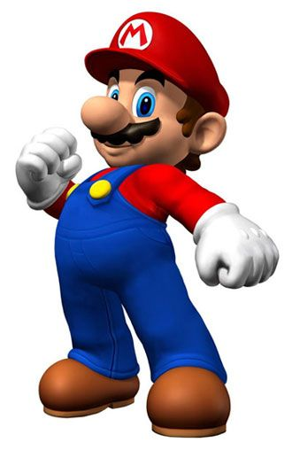
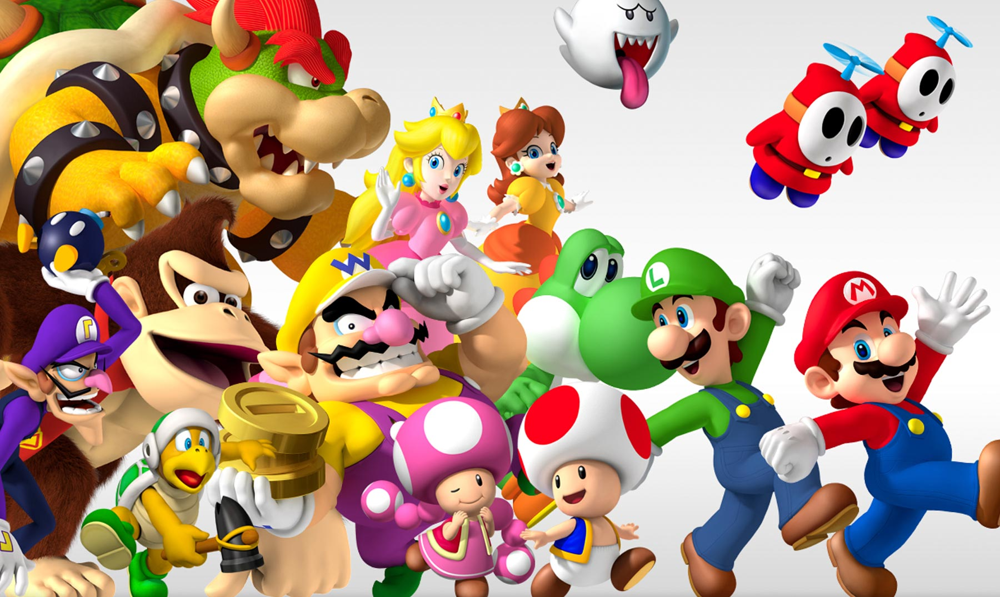

Es una serie de videojuegos de plataformas creados por la empresa desarrolladora Nintendo y protagonizados por su mascota, Mario. Los videojuegos de Super Mario siguen las aventuras del plomero Mario, por lo general en el ficticio Reino Champiñón. A menudo se le une su hermano, Luigi, y ocasionalmente, otros miembros de la franquicia. Al igual que en la mayoría de los videojuegos de plataformas, el jugador principalmente corre y salta a través de plataformas y sobre enemigos en distintos niveles temáticos. Los videojuegos tienen tramas generalmente simples, en los que Mario debe rescatar a la princesa Peach (Princesa Toadstool) que es secuestrada por el villano principal de la franquicia, Bowser. El primer título de la serie, "Super Mario Bros." , lanzado para el Nintendo Entertainment System (NES) en 1985, estableció conceptos y elementos de jugabilidad prevalecientes en casi todos los videojuegos de Super Mario desde entonces. Estos incluyen una multitud de potenciadores y elementos que le dan a Mario, poderes mágicos especiales, como lanzar bolas de fuego o cambiar de tamaño a tamaños gigantes o en miniatura, etc.
La serie Super Mario es parte de la franquicia Mario. Esta incluye otros géneros de videojuegos y otros medios como películas, series de televisión, medios impresos y varios productos. Para septiembre del año 2015, se habían vendido más de 310 millones de copias de los videojuegos de la serie Super Mario, lo que la convierte en la serie de videojuegos más vendida de la historia.
Super Mario Bros. 2 (Cononocido como Super Mario Bros.: The Lost Levels en el resto del mundo) es la secuela oficial del Super Mario Bros. original y fue lanzado como Super Mario Bros. 2 en Japón. Utiliza el motor gráfico original de Super Mario Bros. con algunas adiciones como clima, movimientos de personajes y niveles más complejos, lo que genera una dificultad mucho mayor. El videojuego sigue el mismo estilo de progresión de niveles que Super Mario Bros., con ocho mundos iniciales cada uno con cuatro niveles. El último nivel de cada mundo es un castillo lleno de lava que culmina en una batalla contra Bowser. Esta secuela no se lanzó fuera de Japón en ese período de tiempo, porque Nintendo of America no quería que la serie de Mario fuera conocida por su dificultad frustrante, que fuera inaccesible para un mercado cada vez más amplio de jugadores de videojuegos estadounidenses, ni que estuviera estrictamente desactualizada por el momento en que dicho videojuego podría finalmente ser lanzado en América. En 1993, el videojuego debutó fuera de Japón con el título Super Mario Bros.: The Lost Levels en la compilación de videojuegos titulada Super Mario All-Stars para la Super Nintendo
Super Mario Bros. 3 está dividido en ocho mundos temáticos, como en el primer videojuego oficial de la saga de "Super Mario Bros.", pero con varios niveles (entre 6 y 10 niveles por mundo) y varias etapas de bonificación que se muestran como ubicaciones en el mapa del mundo.
Los niveles no están necesariamente en un orden lineal y en ocasiones, se le permite al jugador saltar niveles o mundos.
El nivel final de un mundo es un nivel de desplazamiento lateral sobre una aeronave y que finaliza con una pelea contra uno de los siete Koopalines de Bowser.
El videojuego introdujo una amplia gama de nuevos potenciadores, incluido el vuelo como "Mario Mapache
Super Mario World fue lanzado para la Super Nintendo y en Japón como "Super Mario Bros. 4" , solo consta de nueve mundos que se muestran a través de un mapa del mundo. La mayoría de todos los 72 niveles tienen una salida, aunque algunos tienen salidas ocultas.Los nuevos movimientos de Mario incluyen un salto giratorio y al dinosaurio Yoshi que puede comer enemigos y tragarlos o escupirlos. Entre los nuevos potenciadores se incluyen la "Pluma" que permite a Mario y Luigi volar con una capa.
El héroe principal del Reino Champiñón. Mario es muy positivo y siempre está alegre. Lo podrás reconocer por sus overoles de color azul, su gorra roja y su característico bigote.
Last updated 3 mins ago
Es el hermano menor de Mario en los videojuegos de Nintendo. Primero apareció en el juego de arcade del año 1983, Mario Bros. luego en Super Mario Bros. Como segundo jugador papel que continuo desenpeÑando en Super Mario Bros 3 y Super Mario World.
Last updated 3 mins ago

La Princesa Peach o Princesa Toadstool es la princesa del Reino Champiñón. Apareció por primera vez en Super Mario Bros. para NES. Peach fue creada por Shigeru Miyamoto y es la damisela en apuros en la mayoría de los juegos de Mario. Desde su debut en Super Mario Bros., Peach ha aparecido en casi todos los juegos de la franquicia, volviéndose uno de los iconos más conocidos de los videojuegos y el personaje femenino de los videojuegos más conocido del mundo. En los juegos de la saga Super Mario, Peach sólo ha sido jugable en Super Mario Bros. 2 y en Super Mario 3D World.
Last updated 3 mins ago

Residente del Reino Champiñón, trabaja al servicio de la Princesa Peach. Toad tiene manchas rojas en la cabeza, aunque otros de su especie vienen en una variedad de colores. Toad es muy alegre y leal. Hace todo lo posible por ayudar a Mario y a Luigi en sus esfuerzos por proteger el Reino Champiñón de Bowser, incluso si eso significa enfrentarse al peligro durante en el proceso.
Last updated 3 mins ago

El rey de los Koopas. Bowser es el archienemigo de Mario y siempre está causando estragos en el Reino Champiñón. Bowser cuenta con muchos secuaces que incluyen a los Koopas, Goombas, Bill Bala y Shy Guys. Cada vez que le pone la mirada al Reino Champiñón sus planes se ven frustrados por Mario y sus amigos. Este poderoso enemigo posee una gran fuerza y hasta puede escupir fuego.
Last updated 3 mins ago

El confiable compañero de Mario originario de la Isla de Yoshi. Es de color verde, pero otros de su especie vienen de otros colores, como rojo, azul, rosa y amarillo. Yoshi es amable y tranquilo. Utiliza su larga lengua para comerse las frutas y a los enemigos, los cuales puede convertir en huevos que podrá arrojar.
Last updated 3 mins ago

Unos traviesos fantasmas que suelen deambular en lugares oscuros y abandonados. Puede que estos fantasmas sean espeluznantes, pero también son increíblemente tímidos. Se congelarán en su lugar y se cubrirán los ojos si alguien los mira directamente
Last updated 3 mins ago

Amigo y cómplice de Wario. Waluigi es el autoproclamado rival de Luigi. Waluigi está dispuesto a esforzarse para derrotar a Mario y a Luigi, aunque solo sea para molestarlos. Sus largos brazos y piernas lo ayudan a mantenerse competitivo en los deportes.
Last updated 3 mins ago

El rey de la jungla, se distingue por una corbata roja con sus iniciales. Donkey Kong puede lanzar gigantescos barriles con la mayor facilidad, y su fuerza es tan grande que el suelo tiembla cada vez que lo golpea. Le encantan los plátanos y siempre guarda con una gran cantidad en su hogar
Last updated 3 mins ago

La princesa de Sarasaland. Su característico estilo se basa en su vestido de color amarillo y sus floreados accesorios. Daisy es alegre, enérgica y con un corazón muy valiente. Disfruta de jugar diferentes deportes con Mario y sus amigos
Last updated 3 mins ago

Hijo único de Bowser, el rey de los Koopas. A menudo lo verás usando una intimidante máscara con una boca pintada en ella. Bowser Jr. es pequeño pero ha heredado la gran fuerza de su padre. Se vuelve berrinchudo si las cosas no salen como él quiere. Es conocido por ser muy problemático y puede ser un poco egoísta.
Last updated 3 mins ago

Una misteriosa chica que viaja a través de la galaxia acompañada de su familia de criaturas con forma de estrella llamadas destellos. Rosalina puede parecer un poco distante, pero en realidad es bastante bondadosa. Es la madre adoptiva de los destellos. Y aunque su hogar está entre las estrellas, de vez en cuando se une a las aventuras de Mario y sus amigos.
Last updated 3 mins ago